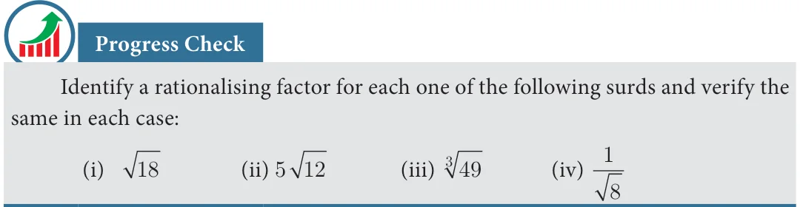
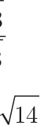

Rationalising factor is a term with which a term is multiplied or divided to make the whole term rational. Examples:
- \(\sqrt{3}\) is a rationalising factor of \(\sqrt{3}\) (since \(\sqrt{3} \times \sqrt{3} =\) the rational number 3)
- \(\sqrt[7]{5}^4\) is a rationalising factor of \(\sqrt[7]{5}^3\) (since their product \(= \sqrt[7]{5}^7 = 5\), a rational) Thinking Corner
- In the example (i) above, can \(\sqrt{12}\) also be a rationalising factor? Can you think of any other number as a rationalising factor for \(\sqrt{3}\)?
- Can you think of any other number as a rationalising factor for \(\sqrt[7]{5}^3\) in example (ii)?
- If there can be many rationalising factors for an expression containing a surd, is there
any advantage in choosing the smallest among them for manipulation?

2.7.1 Conjugate Surds
Can you guess a rationalising factor for \(3 + \sqrt{2}\)? This surd has one rational part and one radical part. In such cases, the rationalising factor has an interesting form.
A rationalising factor for \(3 + \sqrt{2}\) is \(3 - \sqrt{2}\). You can very easily check this.

\((3 + \sqrt{2})(3 - \sqrt{2}) = 3^2 - (\sqrt{2})^2\)
\(= 9 - 2 = 7\), a rational.
What is the rationalising factor for \(a + \sqrt{b}\) where \(a\) and \(b\) are rational numbers? Is it
\(a - \sqrt{b}\)? Check it. What could be the rationalising factor for \(\sqrt{a} + \sqrt{b}\) where \(a\) and \(b\) are rational numbers? Is it \(\sqrt{a} - \sqrt{b}\)? Or, is it \(-\sqrt{a} + \sqrt{b}\)? Investigate.
Surds like \(a + \sqrt{b}\) and \(a - \sqrt{b}\) are called conjugate surds. What is the conjugate of \(\sqrt{b} + a\)? It is \(-\sqrt{b} + a\). You would have perhaps noted by now that a conjugate is usually obtained by changing the sign in front of the surd!

Rationalise the denominator of (i) \(\frac{7}{\sqrt{14}}\) (ii) \(\frac{5 + \sqrt{3}}{5 - \sqrt{3}}\)

Solution
- Multiply both numerator and denominator by the rationalising factor \(\sqrt{14}\).

\(= \frac{25 + 3 + 10\sqrt{3}}{22} = \frac{28 + 10\sqrt{3}}{22} = \frac{2 \times [14 + 5\sqrt{3}]}{22}\)
\(= \frac{14 + 5\sqrt{3}}{11}\)